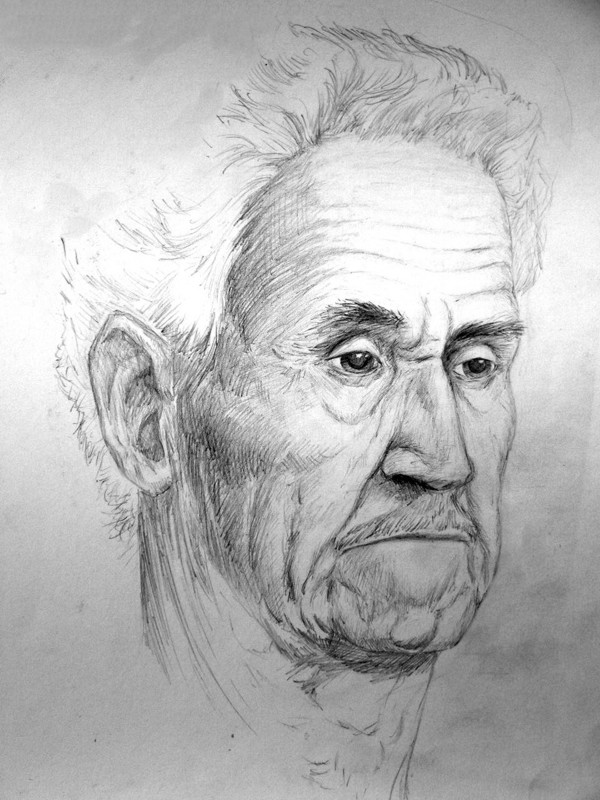
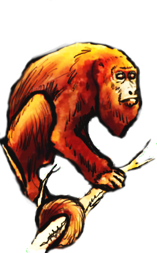

O Estúdio TAO tem como objetivo oferecer serviços em Educação, e em Criação e Produção de Audio/Visuais/Interativas, abrangendo as Artes Tradicionais e as Tecnológicas.
O Estúdio TAO tem como objetivo oferecer serviços em Educação, e em Criação e Produção de Audio/Visuais/Interativas, abrangendo as Artes Tradicionais e as Tecnológicas.
Criamos obras de Arte em Grafite e em Desenho Procedural.
Fazemos Pintura Tradicional até a Ilustração Digital .
Atuamos com Fotografia, Cinema, Animação e Computação Gráfica.
Trabalhamos com Jogos Analógicos e Jogos Digitais , WEB e Audio Visual Interativo.
e Jogos Digitais , WEB e Audio Visual Interativo.
- Nosso público é composto de Empresas diversas, de Escolas em busca de modernização, e também, de Profissionais do Design, Artistas, Tecnólogos, Programadores, Arquitetos e Músicos.
- Somos um Estúdio/Escola itinerante .
- Nossos Cursos são inéditos e as Oficinas são super divertidas!
- Nossa meta é a transdisciplinaridade entre as Artes, as Tecnologias e os Ofícios, trazendo o conhecimento Antigo e o Novo de maneira integrada.
- Criamos nosso próprio material didático utilizando de metodologias comprovadas, como a Filosofia de Aristóteles, as Artes Liberais, a Antroposofia de Rudolf Steiner e o Construtivismo de Jean Piaget.
- Metodologia de avaliação e acompanhamento consciente, adaptiva e inclusiva.
- Nossos profissionais são compostos de membros gabaritados do mercado e de acadêmicos, mestres e doutores.
- Buscamos uma Gestão simplificada.
- Sofremos Atualizações periódicas
- Os cursos e oficinas do Estúdio TAO oferecem uma formação híbrida Arte/Ciência/Filosofia.
- As dinâmicas do Estúdio TAO são divertidas e promovem conhecimento e espírito de equipe
O que é o TAO?
A palavra chinesa TAO significa, literalmente, " o caminho".
No Taoísmo o caminho do sábio é natural, espontâneo e sem sofrimento. "Na busca do conhecimento, todos os dias algo é adquirido.
"Na busca do conhecimento, todos os dias algo é adquirido.
Na busca do Tao, todos os di as algo é deixado para trás."
Tao Te King
Veja o que te inspira na seta de menu, acima à direita.
Quem sou eu?

Dr. Prof. Artes. COUTINHO,MAP.
Idealizador do Estúdio TAO
"Ensinar é fazer o verdadeiro bem com o que se tem de mais valioso e que se recebe do Universo, o conhecimento.
O conhecimento deve se tornar pleno com uma base conceitual em um mundo mental, mas também, sem esquecermos da base material do mundo físico.
Arte e Ciência andam juntas!
O conhecimento é bom e faz bem se é um conhecimento que pode dar origem a um algo a mais, que é criado pelo conhecedor. De outra forma, seria apenas repertório, uma memória sem consciência.
Buscamos uma forma didática integrada e a favor do ser humano.
A busca pelo conhecimento holístico passa pelo caminho inclusivo e agregador, sem viés preconceituoso. Por causa desta visão holística entendemos que é preciso sempre ressaltar os entrecruzamentos e as transferências entre as disciplinas variadas. Estas conexões são viabilizadas pela conversa proporcionada pelas “Artes Liberais”, a dizer: Aritmética, Geometria, Música, Cosmogonia, Gramática, Lógica, Retórica, as tecnologias e os ofícios.
Esperamos sinceramente que todos os seres humanos possam conhecer, de uma forma realmente libertária, sem preconceitos e cheia de bons conceitos!
Mas, o mais importante é divirta-se!"